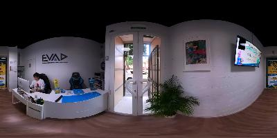

You must activate javascript to visualize the Virtual Tour : EVAD Kids (Virtual tour generated by Panotour).

EVAD Kids
Recepcion
<p style="margin: 0px 0px 20px; padding: 0px; border: 0px; vertical-align: baseline; font-size: 15px; overflow-wrap: break-word; line-height: 1.66em; font-family: 'Open Sans'; font-variant-ligatures: normal; orphans: 2; widows: 2; background-color: rgb(255, 255, 255);"><br></p>
Aula1